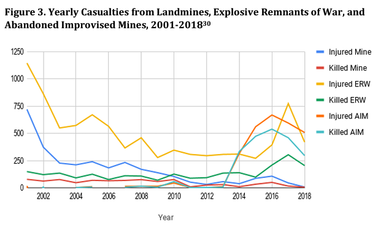

Weaponry Advancements Cause More Collateral Damage at Home and Abroad
By: Aanisah Husain

Image from steemit.com
With great power comes great responsibility… The power to create far more lethal weapons than ever before but at what cost?
The United States’ use of technological advancements in warfare, particularly in Afghanistan, has shown to have an impact, whether it be through airstrikes using bombs and missiles or day-to-day combat.
The weaponry the U.S. used when it first entered Afghanistan in Oct. 2001 is vastly different than the weaponry the U.S. utilized when withdrawing from Afghanistan. The updates in the weaponry are shown through the larger firepower (lethality) and the unintended consequences Afghanis are forced to face.
The main machineries, aside from surveillance technology, used in Afghanistan, were the B-52 bombers and AC-130 gunship jettisons. At the start of the Oct. 2001 invasion, the B-52, the Air Force’s longest-serving bomber, was already ancient technology, with the capability of dropping approximately 37,000 pounds of bombs in one go.

An AC-130H gunship in Afghanistan in 2013. Tech. Sgt. Jason Robertson/US Air Force (Image from popsci.com)
According to updated information, however, the B-52 was capable of dropping 70,000 pounds worth of bombs and missiles. That large capacity alone can prove to be detrimental to the Afghani people in airstrikes.
Data from United Nations, UNAMA, "Protection of Civilians" Annual Reports
Alarmed by the number of civilian casualties being collateral damage, the U.S. tightened engagement and restricted air strikes in 2009.
“What is it we don't understand? We're going to lose this f-----g war if we don't stop killing civilians,” U.S. Gen. Stanley McChrystal said.
However, President Trump loosened restrictions and thus civilian casualties increased.
In 2017, the U.S. dropped their largest yield bomb, the massive ordnance air blast, against ISIS forces in eastern Afghanistan. This bomb was known as the “Mother of all Bombs”.
Brown University’s Cost of War states that from Obama’s last year in office to the last year of recorded data during Trump’s presidency, the number of Afghan civilians killed by U.S.-led airstrikes increased by 330%.
It is not only airstrikes that are killing civilians, but the existing landmines and explosives in Afghanistan.
| Casualties (Injuries and Deaths) | Landmines | ERW | AIM | Total |
| 1979-2000 | 3,293 | 8,955 | 0 | 12,248 |
| 2001-2009 | 3,096 | 6,460 | 97 | 9,653 |
| 2010-2018 | 783 | 4,820 | 3,879 | 10,482 |
| Total | 7,172 | 20,235 | 4,976 | 32,383 |

Data from Afghan government, Directorate of Mine Action Coordination
In 2001 to 2018 alone, the Afghan government reported over 20,125 civilian casualties based on three categories of explosive devices: unexploded ordnances, abandoned explosive ordnances and improvised explosive devices. Afghan civilians have attested to being more fearful of being harmed by these weapons when they witness someone get injured or killed from them.
The constant firepower raining over Afghanistan during the Afghanistan war added other unintended consequences with Brown University’s Cost of War citing breakdowns in the economy, public health, security and infrastructure.
92% of Afghanistan’s population is facing some form of food insecurity, with three million children at risk of malnutrition.
International conflicts are not the only victims of weaponry advancements. The U.S. faces similar turmoil at home with limited restrictions on handguns and rifles -- the most notable assault rifles being the AK-47 and AR-15.
According to history.com, the AK-47 was invented during the Cold War by the Soviet military in 1947. The AK-47 offered a light-weight alternative to a rapid fire machine; one that can fire up to 900 rounds a minute.
Meanwhile, the Pentagon was busy designed the AR-15, a semi-automatic version of the M-16, which previously dominated the U.S. military rifle power. The AR-15 is a weapon that is very popular among mass shooters such as those of Newton, Connecticut, Las Vegas, Nevada, San Bernardino, California, Parkland, Florida.
Source: CDC
Since 2000, there has been a stark increase in firearm-related deaths, with the Centers of Disease Control and Prevention (CDC) marking 2020 as the year with the most deaths due to gun-related injuries in the United States. Almost eight in 10 murders in 2020 involved a gun: the highest percentage since 1968.
As time goes on, the lethality of weapons grows as technology continues to advance, as nations hope for an advantage in conflict, which could lead to more collateral damage as seen in the number of casualties in Afghanistan and the U.S..